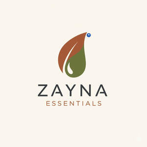

Trade Mark Journal No.2025/049 5 December 2025
UK00004302524 28 November 2025 (29,30)

- Class 29
- Dried fruits; Dried fruit; Dried fruit products; Dried fruit mixes; Fruit peel; Peel (Fruit -); Fruit, stewed; Stewed fruit; Candied fruit; Prepared dried fruit mixes; Dry whey; Fruit rinds; Vegetables, dried; Dried vegetables; Fruit pulp; Pulp (Fruit -); Fruit Powders; Fruit marmalade; Candied fruit snacks; Fruit paste; Fruit leathers; Processed lychee fruit; Fruit salads; Salads (Fruit -); Fruit snacks; Dried strawberries; Dried fruit-based snacks; Sliced fruit; Fruit juices for cooking; Mixtures of fruit and nuts; Dried fruits in powder form; Fruit pulps; Aromatized fruit; Fruit preserved in alcohol; Fruit pectin; Fermented fruits; Fruit desserts; Dried lichee; Fruit preserves; Dried blueberries; Fruit, preserved; Frozen fruits; Powdered fruits; Fruit purees; Dried longan; Fruit conserves; Canned fruits; Fruits, canned; Fruit jellies [not being confectionery]; Dried pawpaws; Tinned fruits; Fruits, tinned; Fruit jams; Fruit chips; Chips (Fruit -).
- Class 30
- Puffed corn snacks; Cereal snacks; Rice snacks; Crispbread snacks; Tortilla snacks; Cereal-based savoury snacks; Corn-based savoury snacks; Fruit cake snacks; Snacks made from muesli; Snacks manufactured from muesli; Cereal based snacks; Snacks manufactured from cereals; Rice cake snacks; Cereal-based snack food; Snack food (Cereal-based -); Snack foods made from cereals; Cheese balls [snacks]; Corn-based snack foods; Rice-based snack foods; Cheese curls [snacks]; Rice-based snack food; Snack food (Rice-based -); Snack food products made from cereals; Grain-based snack foods; Wheat-based snack foods; Cereal snack foods flavoured with cheese; Extruded corn snacks; Cereal based snack foods; Cereal-based snack bars; Extruded wheat snacks; Cereal based prepared snack foods; Multigrain-based snack foods; Snack foods prepared from maize; Tea beverages; Snack food products made from cereal starch; Snack products made of cereals; Snack food products made from rice; Coffee beverages; Chocolate beverages; Flour based savory snacks; Flavourings of tea for food or beverages; Snack foods made from corn; Snack food products made from cereal flour; Snack foods made from wheat; Snack foods made of wheat; Cereal breakfast foods; Prepared coffee beverages; Snack food products consisting of cereal products; Tea beverages (Non-medicated -); Cheese flavored puffed corn snacks; Tea beverages with milk; Coffee drinks; Coffee beverages with milk; Snack food products made from rusk flour; Snack foods prepared from potato flour; Drinks prepared from chocolate; Chocolate-based beverages; Beverages (Chocolate-based -); Chocolate-based beverages with milk; Beverages made of tea; Snack food products made from rice flour; Sweets; Flavourings of almond for food or beverages; Chocolate beverages with milk; Tea-based beverages; Beverages (Tea-based -); Beverages made from coffee; Beverages made of coffee; Snack food products made from potato flour; Flavourings of lemons for food or beverages; Beverages containing chocolate; Puffed cheese balls [corn snacks]; Muesli desserts; Beverages made with chocolate; Beverages made from chocolate; Extruded snacks containing maize; Snack foods consisting principally of bread.
ZAYNA ESSENTIALS LTD